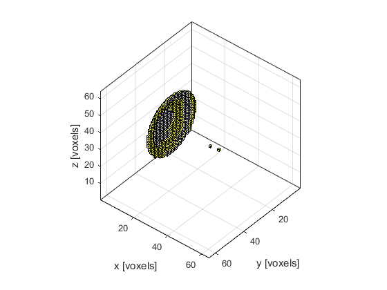
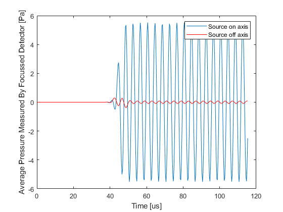

Focussed Detector In 3D Example
This example shows how k-Wave can be used to model the output of a focussed bowl detector where the directionality arises from spatially averaging across the detector surface. It builds on the Focussed Detector In 2D example.
Contents
Defining the sensor geometry
For large single element detectors, the directionality arises because the output is spatially averaged across the pressure field on the transducer surface. Here this effect is simulated using a focussed bowl detector (defined using a binary sensor mask) created with the help of makeBowl.
% create a concave sensor sphere_offset = 10; % [grid points] diameter = Nx/2 + 1; % [grid points] radius = Nx/2; % [grid points] bowl_pos = [1 + sphere_offset, Ny/2, Nz/2]; % [grid points] focus_pos = [Nx/2, Ny/2, Nz/2]; % [grid points] sensor.mask = makeBowl([Nx, Ny, Nz], bowl_pos, radius, diameter, focus_pos);
Defining on and off-axis point sources
To see the focussing effect of the bowl detector, two points sources are defined, one on-axis and one off-axis.
% place the first point source near the focus of the detector source1 = zeros(Nx, Ny, Nz); source1(1 + sphere_offset + radius, Ny/2, Nz/2) = 1; % place the second point source off axis source2 = zeros(Nx, Ny, Nz); source2(1 + sphere_offset + radius, Ny/2 + 6, Nz/2 + 6) = 1;
Running the simulations
Following the simulations, the recorded time series (one per detector grid point) are averaged to model the output of a single element focussed sensor. The resulting time series for both on and off axis source positions are shown below. The detector clearly produces a larger output for the source nearer its focus.
% run the first simulation source.p_mask = source1; input_args = {'PMLSize', 10, 'DataCast', 'single', 'PlotSim', false}; sensor_data1 = kspaceFirstOrder3D(kgrid, medium, source, sensor, input_args{:}); % average the data recorded at each grid point to simulate the measured % signal from a single element focussed detector sensor_data1 = sum(sensor_data1, 1); % run the second simulation source.p_mask = source2; sensor_data2 = kspaceFirstOrder3D(kgrid, medium, source, sensor, input_args{:}); % average the data recorded at each grid point to simulate the measured % signal from a single element focussed detector sensor_data2 = sum(sensor_data2, 1);